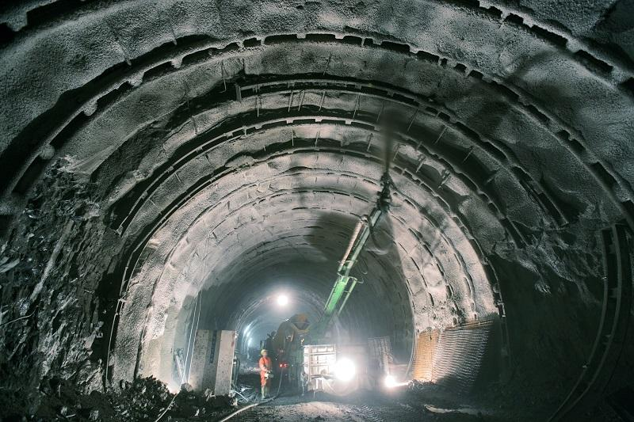
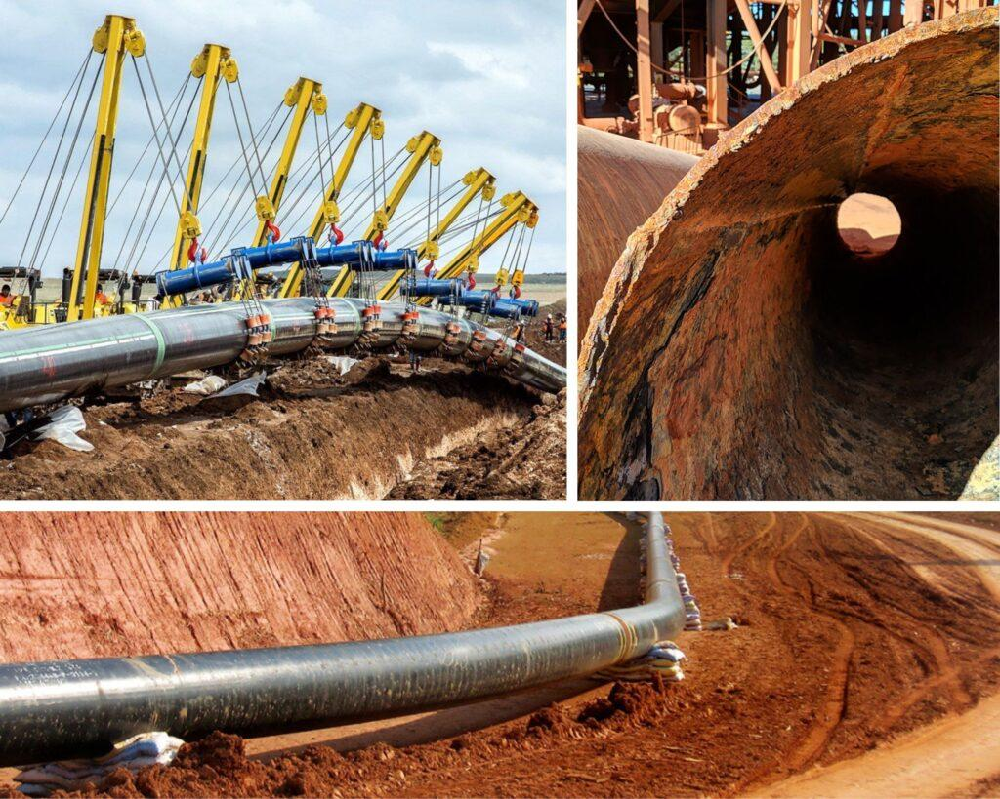

Pioneering Basalt Fiber Reinforced Polymer (BFRP) composites — the superior, eco-friendly alternative to steel and glass fiber for the modern construction industry.


At BasaltechSA, we are dedicated to revolutionizing the construction industry by offering sustainable and environmentally friendly solutions. Our focus on Basalt Fiber allows us to provide innovative and reliable materials for commercial, infrastructure, and residential projects.
We envision a world where all future construction is harmless to our planet, health, and resources — an industry that embraces Basalt Fiber as the sustainable, eco-friendly standard, dedicated to reducing its carbon footprint for generations to come.
To lead in the supply and distribution of innovative, high-quality Basalt Fiber Reinforced Polymer products, championing technological advancements and eco-friendly construction materials.
Raise awareness about the importance of incorporating environmentally friendly alternatives in concrete and asphalt reinforcement projects.
Provide durable, sustainable solutions that significantly reduce the construction industry's carbon footprint.
High-strength basalt fibre for concrete and composites, and basalt reinforcing mesh for roads and surfaces. Both are corrosion-proof, lightweight, and backed by research and testing — built to be specified with confidence.

A high-performance reinforcing fibre spun from molten volcanic rock. Added to concrete, mortar and asphalt — or supplied as BFRP rebar — it lifts tensile and flexural capacity, restrains cracking, and never corrodes.

An alkali-resistant basalt geogrid for asphalt and concrete. It spreads traffic loads, relieves stress and controls reflective cracking — extending pavement life at a fraction of the weight of steel mesh.
Derived from volcanic rock, basalt fiber offers remarkable resilience — far outperforming traditional materials across every key property.

Basalt fiber weighs only 25% of steel reinforcement but offers 2.5× the specific tensile strength, and 20–40% better mechanical strength and puncture resistance than glass fiber.
A natural, sustainable material with an energy-efficient production process. Basalt fiber has a 74% smaller carbon footprint than steel and reduces CO₂ emissions by 5.24 tons of coal equivalent per ton produced.

Basalt fiber withstands temperatures from −260°C to 700°C, maintaining complete structural integrity in extreme cold and heat — ideal for asphalt and concrete paving applications.

Unlike steel, basalt fiber is completely impervious to rust and corrosion. It performs exceptionally well in harsh organic, inorganic, acidic, or alkaline environments — significantly extending the lifespan of structures.

Basalt fiber exhibits superior fatigue resistance, ensuring sustained performance under repetitive stress and reducing the risk of failure in high-stress environments such as roads, bridges, and industrial floors.

Basalt fiber’s excellent dielectric properties make it ideal for applications requiring electromagnetic neutrality — including telecoms infrastructure, aerospace facilities, and medical buildings.
From roads and bridges to underground structures and soil stabilization — Basalt Fiber is versatile and effective across all major infrastructure projects.




How basalt compares to the materials you already know, the strength numbers behind it, real factory test results, and the standards you can write straight into your designs.
| Characteristic | Basalt Fiber ❖ | Steel Fiber | Glass Fiber | Polypropylene |
|---|---|---|---|---|
| Tensile Strength (MPa) | 1100 – 1400 | 360 – 420 | 35 – 530 | 170 – 260 |
| Elastic Modulus (GPa) | 79 – 110 | 190 – 200 | ≤ 50 | ≤ 35 |
| Density (g/cm³) | 2.8 – 3.0 | 7.8 | 2.6 – 2.7 | 0.89 – 0.92 |
| Elongation at Break (%) | 1.5 – 3.1 | 3.0 – 4.0 | ≤ 4.5 | 20 – 250 |
| Operating Temperature (°C) | −260 to 700 | −60 to 540 | −60 to 250 | −5 to 80 |
| Corrosion Resistance | Very High | Low | High | Low |
Figures above are for basalt in its composite / bar form. Raw continuous basalt filament reaches 3,000–4,840 MPa tensile strength (see headline figures below). Values are compiled from peer-reviewed literature; a full source list is available on request.
How hard it resists being pulled apart before it snaps — around 6–10× steel.
One basalt bar does the job of a steel one — higher strength, and it never rusts.
How much it flexes under load — stiffer than glass fibre, more flexible than steel.
A third of steel’s weight — cheaper to ship and quicker to install.
Machine direction = 19.68 strands × 5.571 kN per metre width. Product is manufactured above export requirements with a built-in safety margin; recorded values can be reduced by strand slippage in winding-type test fixtures. For context, typical commercial basalt geogrids test at 50–100 kN/m.
Material properties compiled from peer-reviewed research and a Florida DOT (Report BE694) characterisation study; mesh figures from BasaltechSA factory testing. Full source list and references available on request.
Talk to our team today about how Basalt Fiber can transform your next project.
Whether you need Basalt Fiber, Reinforcing Mesh, or technical advice — our team is ready to help.
We operate across Gauteng and Limpopo, serving projects throughout South Africa.
Reach our team directly for product enquiries and project consultations.